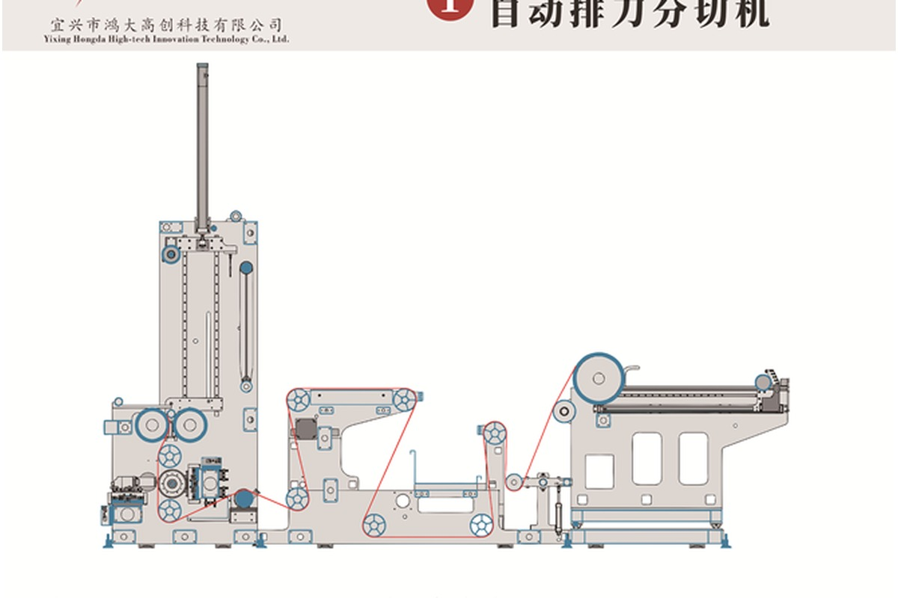

Product Value
For clean cutting and stable roll output.
This machine type is suitable when buyers need precise roll width, reliable tension control and consistent operation in high-volume converting environments.
- Suitable materials: nonwoven, paper, film, textile and flexible roll materials
- Production focus: clean cutting, stable tension and accurate rewinding
- Configuration: width, speed, knife system, winding method and controls customized by project
- Industries: hygiene products, medical materials, wipes, packaging and industrial nonwoven processing
Datos técnicos del manual de producto
Automatic row knife slitting machine configuration.
Confirmed from HDPTH product manual. Final machine configuration can be adjusted according to material, width and process requirements.
| Item | Parámetro del manual | Buyer RFQ Note |
|---|---|---|
| Velocidad de producción | 500-1200 m/min | Confirm stable running speed with material sample |
| Unwinding Diameter | 1200-2500 mm | Provide parent roll diameter |
| Rewinding Diameter | 1200 mm | Confirm finished roll diameter and core |
| Minimum Slitting Width | 45-65 mm | Depends on knife and material configuration |
| Effective Winding Width | 1500-4500 mm | Custom width range available |
| Applicable Basis Weight | 12-120 g/m2, except fluffy products | Share GSM or thickness |
| Potencia instalada | 35-65 kW | Confirm electrical standard |
| Potencia efectiva de operación | 25-55 kW | Depends on final configuration |
| Suministro de aire | 0.5-1 m3/hour | Prepare compressed air supply |
| Materiales | Nonwoven fabric, PE film, paper, hot air, spunlace, spunbond | Send material details for testing |
FAQ
Can the machine be customized?
Yes. HDPTH can discuss machine width, cutting system, rewinding method, control setup and auxiliary equipment according to your production needs.
What information is needed for quotation?
Please provide material, parent roll width, finished roll width, speed target, roll diameter and application industry.